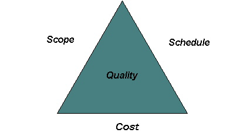
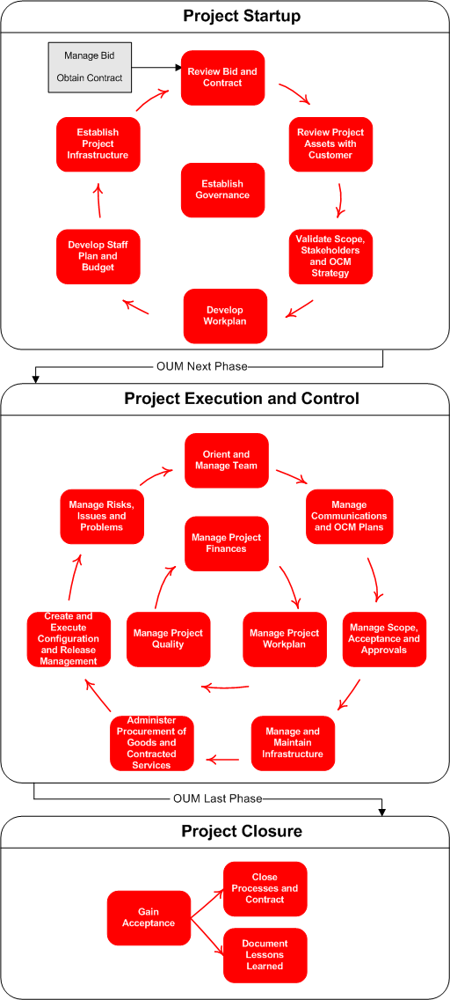

OUM |
Focus Area Overview |
||
Method Navigation |
Current Page Navigation |
||
|
|
||||||||
“Any first attempt at converting folklore into knowledge, and a guessing game into a discipline, is liable to be misread as a downgrading of individual ability and its replacement by a rule book. Any such attempt would be nonsense, of course. No book will ever make a wise man out of a donkey or a genius out of an incompetent. The foundation in a discipline, however, gives to today’s competent physician a capacity to perform well beyond that of the ablest doctor of a century ago, and enables the outstanding physician of today to do what the medical genius of yesterday could hardly have dreamt of. No discipline can lengthen a man’s arm. But it can lengthen his reach by hoisting him on the shoulders of his predecessors. Knowledge organized in a discipline does a good deal for the merely competent; it endows him with effectiveness. It does infinitely more for the truly able; it endows him with excellence.”
From Managing for Results, by Peter F. Drucker
The fundamental responsibility of the project manager is to manage delivery of an agreed upon level of solution quality while planning for and controlling the "triple constraints" (scope, cost and schedule). If a project is represented as a triangle, then the project manager's responsibility is to make sure that the target level of quality is actualized while keeping the three sides of the triangle in balance.

Managing project scope, cost, schedule and quality is the primary objectives of a project manager. If any one of these components change, then the imbalance will result in the change of one or more of the other components.
Managing the triple constraints to maintain an agreed to level of quality sounds fairly simple. Unfortunately, it is anything but simple. In No-Nonsense Advice for Successful Projects, Management Concepts17, author Neal Whitten provides the following list of project manager responsibilities:
The Manage focus area provides guidance to the project manager across all these responsibilities.
The Manage focus area (formerly PJM) has three phases:
Each of these phases is intended to support the project manager during the traditional lifecycle phases of the project as well as to be easily used with an appropriate execution method (specifically OUM Implement, however OUM Manage can be used with other execution methods).
As implied by its name, the Project Start Up phase targets the beginning of the project. The goal of this phase is to conduct the necessary project start up. The project manager will define the project with respect to scope, quality, time, and cost. The overall Project Management Plan and the plans for each Manage process will be developed. The Project Start Up phase also includes establishing the project infrastructure and securing project resources.
The Project Control and Execution phase is directly associated with the project lifecycle phases in OUM Implement (or another execution method). The purpose of this phase is to manage the execution of the project. This includes using the policies, standards, and procedures delineated in the Project Start Up phase, and perform the necessary reviews, and measurements to confirm that the project is being executed according to the published plan. It is also the process of comparing actual performance with planned performance, analyzing variances, evaluating possible alternatives, and taking appropriate corrective action as needed. Corrective actions are changes made to bring expected future performance of the project into line with the plan. The Project Execution and Control phase tasks are repeated for each execution method lifecycle phase (for example, Inception, Elaboration, etc.).
Planning of each phase of the execution method is an integral step in the Project Execution and Control phase. The change in the organizational structure of the Manage focus area does not eliminate the need to accomplish these tasks.
During the Project Closure phase, the project is "closed" from an administrative and contractual standpoint. This includes validating the project outputs are complete and align with the organization’s expectations, gaining final confirmation and securing all documents for reuse, collection and retention.
The integration of Manage with Implement is illustrated below:

In general, the Manage Project Start Up phase is conducted prior to the first phase of the Implement focus area. The Manage Execution and Control phase runs concurrently with the Implement focus area phases, and the Project Closure phase begins once the project execution is concluded.
Manage tasks are further refined into activities to better represent the Project Management lifecycle.
The Project Execution and Control phase is made up of many ongoing tasks. An ongoing task is defined as a task that occurs continuously throughout a project, rather than at a specific known time. The ongoing tasks occur as needed and do not include dependencies among the tasks or with the execution method tasks. The ongoing tasks in Project Execution and Control are organized into the following activities:
In the Project Start Up and the Project Closure phases, there are dependencies among the activities which further define the Project Management lifecycle. The Project Execution and Control phase is made up of ongoing tasks. In general, ongoing tasks are conducted as needed and not dependent on other tasks in the workplan.

The Manage focus area is organized into thirteen (13) processes:.
The following diagram illustrates how the processes are executed across the three Manage phases.

Collectively, these processes form a comprehensive set of tasks required to manage an Information Technology project. Every project includes most, if not all, of these processes, whether they are the responsibility of a consulting organization, a customer organization, or a third party.
There are many "touch points" among the Manage processes. In other words, the outcome or output(s) from one process often affect the output(s) of another process. The relationships among processes in the Project Start Up phase illustrate this point. For example, Review and Analyze Bid Materials influences the Define and Confirm Scope task of the Scope Management process which, in turn, influences development of the Project Workplan in the Work Management process which, in turn, helps determine the Approved Project Budget and Financial Management Plan in the Financial Management process.
Another example of process relationships is stakeholder management. Preliminary stakeholder analysis begins in the Bid Transition process during Project Start Up. Conducting stakeholder communications should be included as part of the Communications Plan developed in the Communications Management process and this plan will be carried out during the Execution and Control phase. Additional stakeholder analysis and stakeholder alignment activities are also addressed as appropriate in the Organizational Change Management process.
The Project Management Plan (PMP) is the single most important output produced by the project manager. It is developed iteratively during Project Start Up. In the first iteration, the initial PMP document or presentation is created. At this point in time, some content is already available from the Bid Transition tasks and the contract. Remaining sections are completed as their corresponding tasks are executed during Project Start Up and in particular during the Establish Governance activity. After all the tasks that contribute to the PMP have been executed, the document or presentation is finalized. The following image shows how the various tasks in Project Start Up that contribute to the PMP:

The output of a Manage task is called a work product, or simply, an output. In past method releases, the output of a task was referred to as a deliverable. The term deliverable has been changed to eliminate the risk of having the method deliverables confused with the contractual deliverables. A contractual deliverable is specifically referenced in the contract and often has a payment schedule attached to its acceptance.
Contractual deliverables are typically method outputs, but they can also reference additional deliverables not documented in the method. In addition, not every task referenced in the method material is required for a given project. The required tasks are based on specific project scope. In this case, the "optional" tasks are part of the Manage method material, but are not included in the Project Workplan.
It is important for the project manager to understand and distinguish between these concepts in communications with customers.
Although it has been developed for moderate to large-scale projects, the Manage focus area is also applicable to smaller efforts as well. The philosophy behind Manage is that the principles of sound project management, do not change with project size. Rather, the sophistication, structure and procedural approach should scale as appropriate. For example, a large, multi-team, multi-site program will require a sophisticated Issue Management system and database while a small single location project team may find a simple Excel spreadsheet sufficient for capturing and tracking issues. In line with this philosophy, each Manage task should be considered a required, core task. However, the depth to which these tasks are performed on smaller projects may vary substantially from larger projects.
As part of scaling the Manage focus area to the project, the project manager must determine which, if any, Manage tasks should be expanded, reduced, or consolidated based upon the scope, objectives, approach and risks of the project.
The Manage focus area is a scalable, flexible tool. It is comprised of well-defined processes that can be managed in several ways to guide a team through an implementation project. Teams frequently tailor Manage to match the project’s expertise, complexity, requirements and scope.
Note: Manage tasks within the processes, depending upon the scope, objectives and approach of the project, can be both linear and concurrent.
Reuse is almost self-explanatory, and is a very simple but general concept and can be summed up as "not reinventing the wheel." All phases should make use of reusing intellectual capital (IC). To make sure that Oracle is taking advantage of past projects and capturing the best from current projects, project and program managers should:
Even though it makes sense to consider reusable assets during each task, it is probably more appropriate to create a task to evaluate any potential assets at the start and end of each process or phase. The assessment of the reuse potential of assets in the phase or process should be recorded in the Reuse Plan. A proposal should be created for reuse asset development (Reuse Packaging Proposal) for any candidate reuse assets that includes the following information:
The project reuse coordinator is responsible for executing this task as well as for developing the Reuse Packaging Proposal(s).
For an asset to be easily reusable, it must adhere to certain standards. Documents should adhere to a standard composition and make use of common elements and project-specific variables. Code should adhere to the Oracle coding standards for the appropriate tool or language and perhaps fit into a technical or application framework (for example, HeadStart for Applications). Some of these standards exist formally, but most exist informally or not at all. Each project will need to develop these standards to make sure that assets are designed from the outset for maximum reuse
Estimating and organizing project management involves three factors:
Oracle’s project experience indicates that total project management effort typically ranges from 15% of project effort for small projects to as much as 25% for the largest projects. Project management effort increases as the project size increases because of increasing phase control complexity and coordination among full time project management team members. Project duration also affects project management effort relative to total project effort, since Project Execution and Control occurs during the entire project.
The people who have influence over the products and conduct of the project may be drawn from within the organization, supplied by an outside organization, or a combination of both.
A contract may or may not be involved. In the Manage focus area, the consultant and the customer represent the two parties which together form the project management team responsible for the project’s success. The customer represents the customer organization, or primary beneficiary of the project, as well as the acquirer, or funding source for the project. The customer is also assumed to be capable of providing both physical and human resources for the project. The consultant represents an information services provider organization with management structure and systems. This organization may be either a profit center, performing the project for a profit, or a cost center, sharing project costs with the customer. It is made up of practices, or business units that supply consulting staff resources and sub-contractors to the project. Note that the tasks performed in reaching and maintaining a contractual agreement between the customer and consultant are not covered in the Manage focus area. The Manage focus area assumes that a contract may be established prior to the start of the project, and identifies where contractual impacts can occur during the project A contract is not a prerequisite for the use of Manage. It also assumes that both the customer and the consultant have internal management policies governing project conduct. Tailor these aspects of the customer-consultant relationship to your project’s specific situation.
The key management roles performed by the customer in the Manage focus area are the project sponsor and customer project manager. The project sponsor is the customer role that holds the budget for the project, and may be an individual or a committee. The project sponsor establishes organizational commitment to the project and validates project objectives. The customer project manager is expected to be assigned to the project where customer commitments or business interests require a daily customer management presence. This role is responsible for providing customer resources, resolving problems, and monitoring the consultant’s progress. The key management roles performed by the consultant in Manage are the consulting organization's (for example Oracle) project sponsor and the project manager. The consulting organization project sponsor role represents the consulting manager whose practice is responsible for the successful execution of the project. The project manager is held ultimately responsible for the project’s success or failure. The project manager must manage the various aspects of time, cost, scope, and quality to align with customer expectations and meet the business objectives of the consulting practice, while providing challenging opportunities to project staff.
The roles depicted in the organization chart are those that are assigned responsibilities to perform the Manage tasks.
Staffing involves two factors:
Each role defined in the project management support team will only be assigned to different people on medium-sized projects or larger. On the largest projects, there may even be more than one person performing each of these roles, and the team will be organized into a project office, with a manager.
On smaller projects, the project manager assumes most of the responsibilities of the project support team. The first responsibility the project manager should relinquish as project size increases is that of configuration manager. This role is frequently assigned to a senior person performing a technical support role, such as a system administrator.
The responsibility for quality management is only a full-time position on large-scale projects. The quality auditor should not report to any of the project team due to a potential conflict of interest. The quality auditor is a role independent of the project as shown on the staffing chart. There are other organizations that are commonly employed on larger projects to facilitate management communication and decision-making:
The steering committee represents the business objectives associated with the project, guides the overall project review, adopts the recommendations, and provides sponsorship for implementing the changes. The steering committee includes high-level stakeholders, along with the project sponsor. Regular meetings should be held to review progress and resolve outstanding issues. The steering committee members are responsible for the project approach buy-in, funding, issue resolution, and sign-off.
The CCB is an internal, formally chartered project organization responsible for reviewing, evaluating, approving, delaying, or rejecting change requests, and for recording and communicating such decisions. The CCB is chaired by the project manager and includes the customer project manager, project administrator, configuration manager, and team leaders. The CCB normally escalates changes affecting scope to the steering committee.
The IRB is organized to review and provide recommendations in order to address escalated issues and risks in situations where a regular, dedicated meeting is deemed necessary. It is staffed similarly to the Change Control Board (CCB), and can be combined with it. It may also be part of a weekly project progress review team that would meet to discuss project progress as well as issues and risks.
Multiple site projects require a higher level of project administration and control to coordinate the tasks and to leverage common outputs between projects. In a multiple site project, you will need to position site coordinators as part of your project management team. These people also establish consistency in the delivery and presentations of work, use of techniques and approach, use of standards and guidelines, and interpretation of enterprise-wide strategies.
Another important role that coordinators perform is facilitating the technical strategies between related sites. This role calls for a more formal exchange of technical information and status review. These site coordinators will also distribute software and documentation to multiple data centers.
Please read Project Management in OUM. It describes how the OUM Manage focus area and Implement focus area work together.
If you have never managed a project with a Unified Process approach, or are not familiar with the terms "iterative" or "incremental, read the Tips for Project Managers and Planning a Project using the Oracle Unified Method (OUM). For further information on managing iterative projects, see Managing Iterative Software Development Projects.

Copyright © 2006, 2016, Oracle and/or its affiliates. All rights reserved.